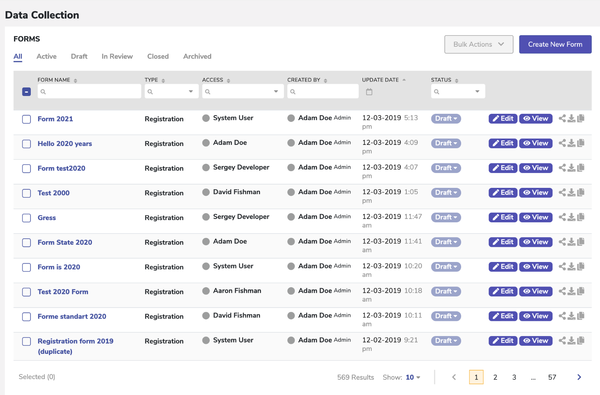
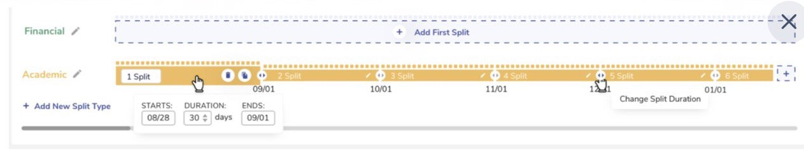
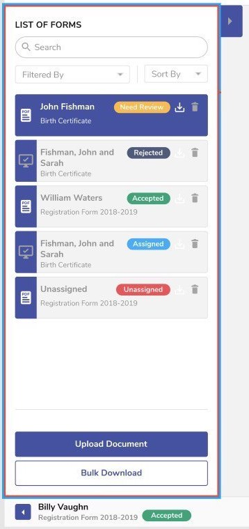
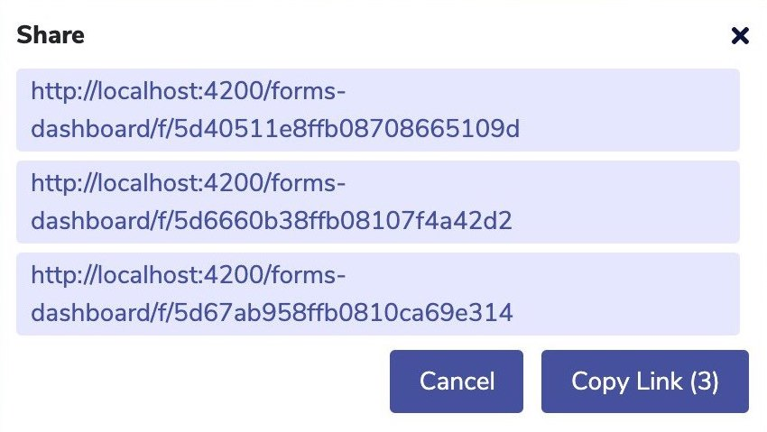

Data Collection Module A flexible form system where users can filter by name, type, access level, author, date, and status. Forms can be edited, downloaded as PDF, or shared directly.
Analytics Dashboard Automatically generated charts and percentage ratios based on collected data for quick insights and decision-making.
Custom Period Selection Users can define custom periods by date, manually set ranges, or adjust intervals directly in a table.

Period Editing Modify existing periods by changing their name and duration, or delete them entirely for full control.
Student Analytics Detailed student profiles with payment history and linked documents for transparent financial tracking.

Bulk Form Actions Manage multiple forms at once by downloading or deleting selected items in a single step.

Link Sharing Generate a single shareable link containing multiple documents for convenient collaboration.
Custom Calendar A tailor-made date picker component designed to match the client’s requirements and branding.